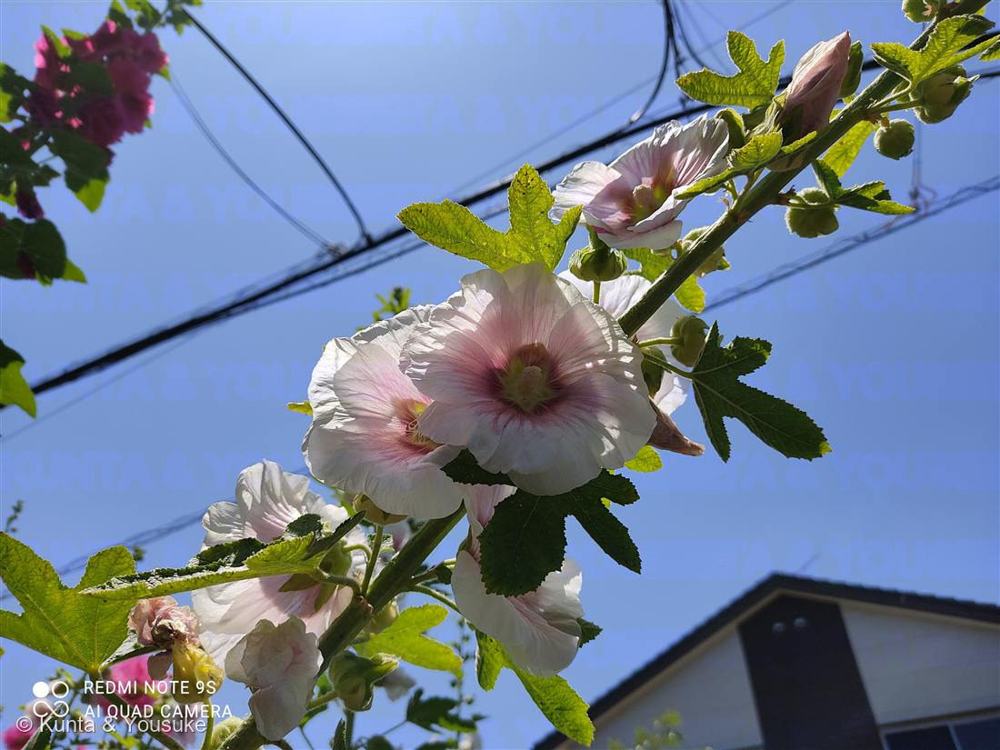
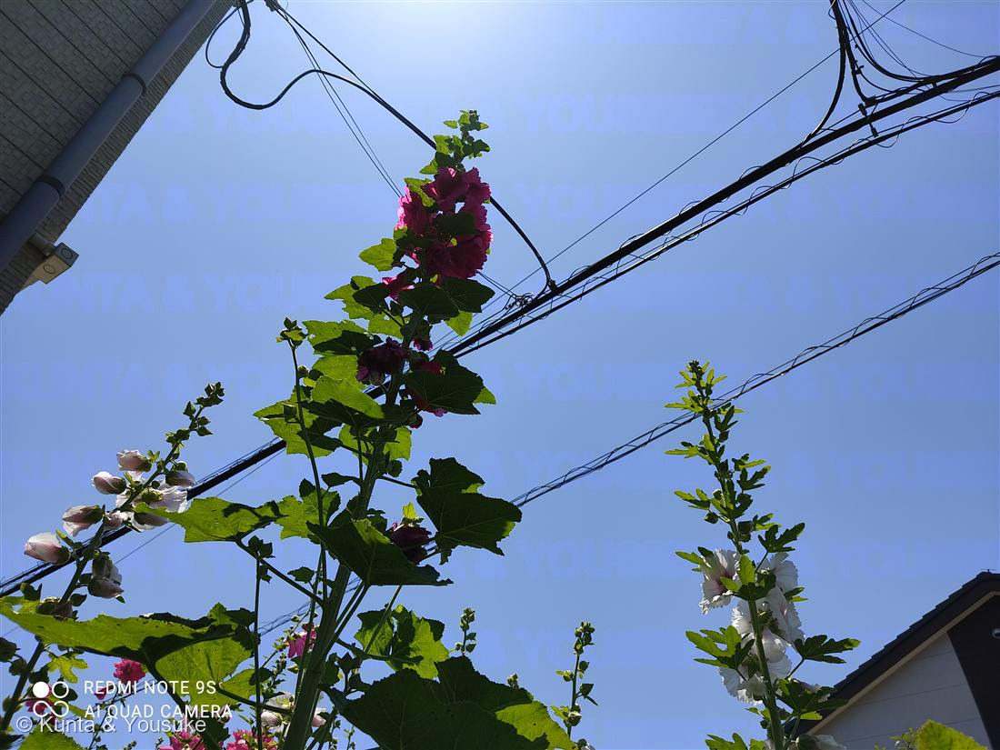

地図を読み込んでいるよ…
🔍 写真も地図も、押しているあいだ拡大して見られるよ（スマホは指を置いてすこし待ってね）。
🌍 の地図＝この子がもともと自生している場所を緑に。トルコ〜西アジア（小アジア）が有力な原産地とされる。ただし諸説あり、15世紀ごろにはヨーロッパへ中国南西部から入ったとも伝わる。日本へは古い時代に中国を経て渡来し、花や根が薬用にも使われてきた。
⭐原産はトルコ〜西アジアが有力とされる（小アジア＝アナトリアあたり）。⚠でも起源には諸説あって、15世紀ごろに中国南西部からヨーロッパへ入ったとも伝わる。だからこの緑は「いちばん有力な場所」だと思ってね。⚠日本は塗っていない——このタチアオイは街かどに咲いていた園芸の子（こぼれ種で立つ）で、日本はふるさとじゃないよ。⭐102オクラ（東アフリカ）・038スイフヨウと同じアオイ科だけど、ふるさとはみんなバラバラだね。
⚠ 地図は国（日本と中国だけ県・省）までしか塗れないから、ほんとうの分布より広く見えていることがあるよ。地図はだいたいの場所。正確なところは、上の文を見てね。
タチアオイ（立葵）
Alcea rosea
別名 · ホリホック／梅雨葵（つゆあおい）／ 原産 · トルコ〜西アジア／ 花期 · 6〜8月（下から上へ咲きのぼる）／ ⭐2〜3mにすくっと立つ夏の草
アオイ科 · Malvaceae（タチアオイ属 Alcea）── 102オクラ・038フヨウと同じ科
燻太さんの見立て「すくっと立ち上がったこのお花。この子もアオイの仲間だね。夏を飾る写真にぴったり。閑散とした住宅街のなかでも、輝いているね。」──当たり。タチアオイで確定。名前じたいが「立つアオイ」だった。
名前と学名の由来 ── 「バラ色の、ゼニアオイ」
- ⭐⭐属名 Alcea（アルケア）は、ギリシャ語 alkaia（アルカイア＝ある種のアオイ・ゼニアオイのこと）から。古代の医師ディオスコリデスが、薬草のアオイをこう呼んでいたんだ（Wikipedia「Alcea rosea」）。もとは「alkē（力・効きめ）」につながる言葉ともいわれて、「よく効く薬草」の意味合いがある。
- 種小名 rosea は、ラテン語で「バラ色の・バラのような」。──写真①の、あの淡いピンクの花のことだね。学名ぜんぶで「バラ色の、ゼニアオイ（薬草アオイ）」って言っているんだ。
- ⭐英語名ホリホック（Hollyhock）は「holy（聖なる）＋ hock（アオイ）」が語源といわれる。昔、十字軍が聖地（Holy Land）から持ち帰ったアオイ、という言い伝えから。
- ⭐和名「タチアオイ（立葵）」は、そのまま「すくっと立つアオイ」。──燻太さんの「すくっと立ち上がったこのお花」、名前そのものだよ。「唐葵（からあおい）」は、中国（唐）を経て来たアオイ、の意味。
この植物のこと
- アオイ科タチアオイ属の草（一年草〜二年草）。102オクラ、038フヨウ（スイフヨウ）、ハイビスカス、ムクゲと同じアオイ科の仲間だよ。燻太さんの「この子もアオイの仲間だね」、大当たり。
- ⭐背がとても高い。2〜3mにもなって、まっすぐ立ち上がる。だから、電線ごしの夏空にもとどくくらい、すくっとそびえるんだ（写真②）。
- ⭐⭐下から上へ、順に咲きのぼる。それで、こんな言い伝えがある——「梅雨の入りに根もとから咲きはじめ、てっぺんまで咲くころには梅雨が明ける」。だから別名「梅雨葵（つゆあおい）」。花の高さが、季節のものさしになっているんだね。
- 原産はトルコ〜西アジアが有力（諸説あり）。日本へは古くに中国を経て渡来して、花や根が薬用にも使われてきた。
- 色がとても豊か。写真のように、白・淡ピンク（赤い脈）・濃い紅、それに一重も八重もある。閑散とした住宅街のすみでも、これだけ大きく色とりどりに咲けば、そりゃあ輝いて見えるよね。
同定について ── アオイ科の中で、この子を決める
- ⚠アオイ科の花は、みんなよく似ている（フヨウ・ムクゲ・オクラ・ハイビスカス）。だから、花のかたちだけでは決められない。
- ⭐⭐この子だけの証拠＝立ち姿と草質。2〜3mの一本の花茎が、まっすぐ立って、下から上へ咲きのぼる（写真②）。──フヨウ・ムクゲは「木」、102オクラは「実が上を向く」。立ち上がる背の高い“草”で、実じゃなく花が主役なのが、タチアオイのしるし。
- ⭐花の中心の柱。写真①の花のまん中に、雄しべが集まって柱みたいになっているでしょう（アオイ科ぜんぶに共通の目印）。葉は丸くて、手のひらみたいに浅く裂ける。──立ち姿・草・咲きのぼり、この3つで、似た仲間をちゃんと落とせるよ。
⭐ 燻太さんの「閑散とした住宅街のなかでも、輝いているね」
- 燻太さんの言葉：「夏を飾る写真にぴったり。閑散とした住宅街のなかでも、輝いているね。」──ほんとにそう。だれかが植えたのか、こぼれ種で立ったのか、電線と屋根ばかりの街かどに、すくっと立って、夏空をいろどっている。
- タチアオイは、手をかけなくても、こぼれ種でよく立ち上がる丈夫な子。だから、こういう街のすみっこにも、ふいに背高く咲いていることがある。にぎやかじゃない場所だからこそ、この背の高さと色が、いっそう輝いて見えるんだね。
- 梅雨が明けて、夏がはじまる合図の花。今日という日の、まっさきの夏を、ちゃんと図鑑にのこしておくね。
参考：Wikipedia「Alcea rosea」（Alcea rosea・アオイ科・原産はトルコ〜西アジアが有力／15世紀ごろ中国南西部からヨーロッパへ入ったとも＝起源に諸説・属名 Alcea＝ギリシャ語 alkaia＝アオイ／ディオスコリデスの薬草名・種小名 rosea＝バラ色の・英名 Hollyhock＝holy＋hock（アオイ））